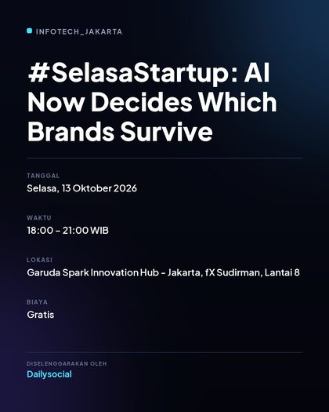
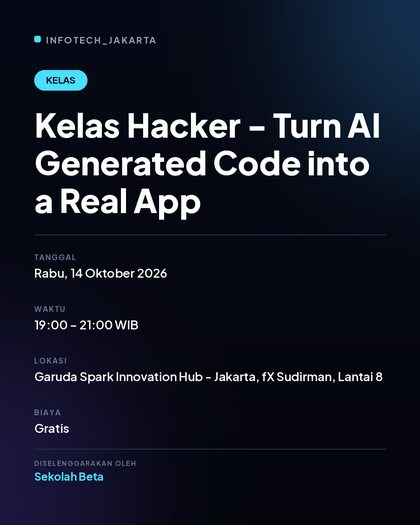
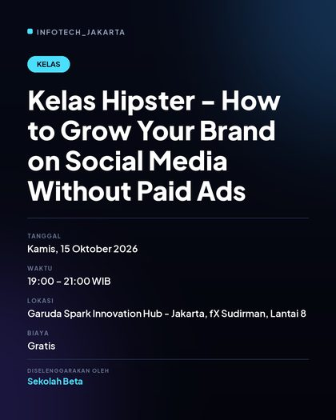
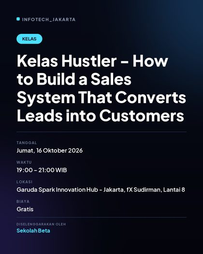
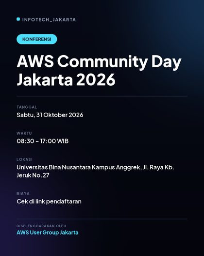
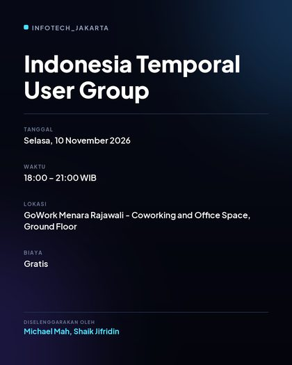

Sekolah Beta: Kelas Hacker - Turn AI Generated Code into a Real App
Daftar / info →
Sekolah Beta: Kelas Hipster - How to Grow Your Brand on Social Media Without Paid Ads
Daftar / info →
Sekolah Beta: Kelas Hustler - How to Build a Sales System That Converts Leads into Customers
Daftar / info →
AWS Community Day Jakarta 2026
Daftar / info →